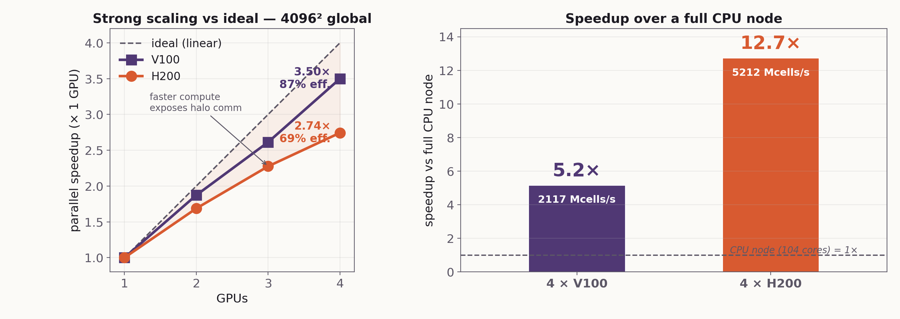
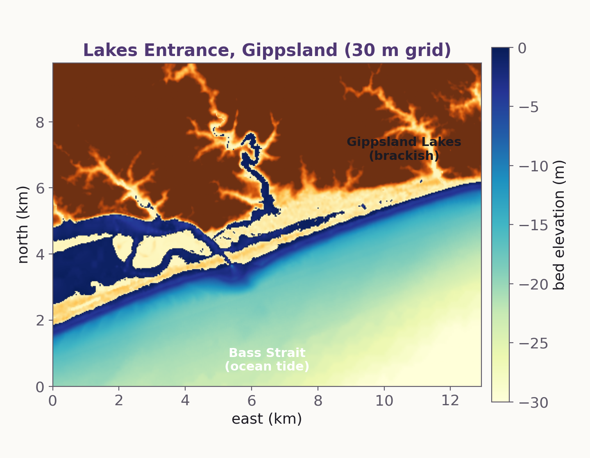
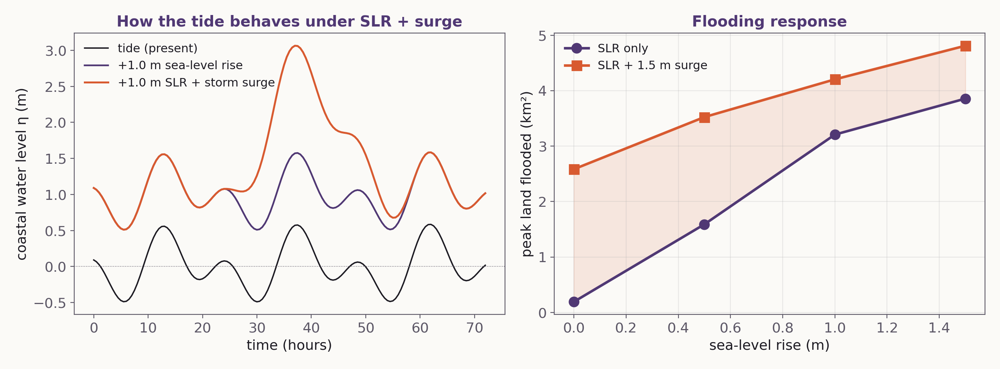
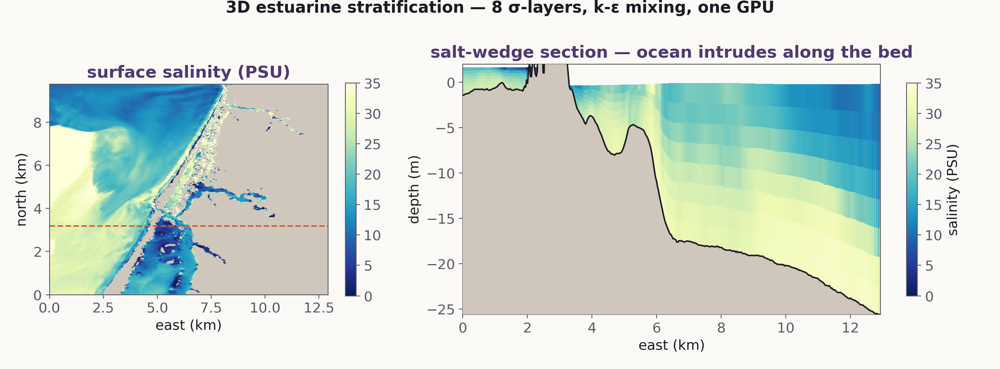
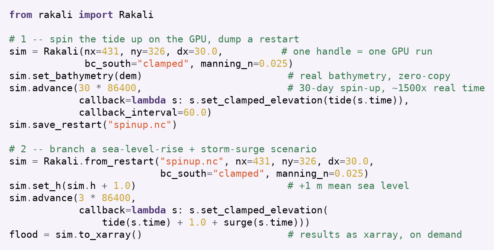

A single Fortran source runs on NVIDIA and AMD GPUs and on multicore CPUs — do concurrent for compute, OpenACC for data movement. No vendor lock-in, no second code path.
Structured Cartesian and unstructured triangular grids; tides, wetting/drying, rivers, real bathymetry. Estuaries and shelves, not just the open ocean.
Device-resident by design — state lives on the GPU, only diagnostics return. [~707 Mcells/s] for 2D barotropic on one V100.
Fast enough that sea-level-rise, storm-surge or dredging scenarios become an afternoon’s exploration, not a month’s campaign.

Raising mean sea level by [+1 m] at Lake’s Entrance [shifts the salt intrusion ~N km upstream / changes the tidal range by X%] — resolved in full 3D and computed in [minutes] on a single GPU. Rakali is a do concurrent + OpenACC coastal solver: one source for CPU and GPU, scripted from Python.




Multilayer hydrostatic and non-hydrostatic; salinity + temperature with a nonlinear equation of state, baroclinic pressure gradient, PP81 / k-ε / KPP turbulence closures, Smagorinsky lateral mixing, Manning bottom friction.
NVHPC (GPU + multicore), gfortran and ifx — all from the same code. The standard-language do concurrent expresses the parallelism; OpenACC enter/exit data keeps fields on the device.
An opaque-handle iso_c_binding API exposes the solver to Python with zero-copy NumPy views — set bathymetry, force, step, and read fields live from a script or notebook. MPI is automatic.
Rakali brings GPU-native performance to 3D coastal modelling without sacrificing portability or scriptability. The Lake’s Entrance sea-level experiments show it is fast enough to make scenario exploration routine and interactive. [Further physics and validation underway.]